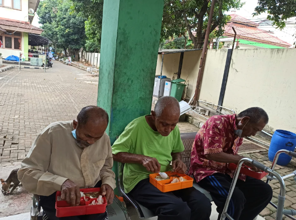

Olá! Esse é o espaço da Liga Estudantil de Gerontologia -LEG
Promovemos ações de saúde e bem-estar para a comunidade idosa, unindo acadêmicos e profissionais dedicados. Junte-se a nós e faça a diferença!
Nosso Objetivo!!
Promover a saúde e o bem-estar de pessoas idosas por meio de ações inter/multidisciplinares que favoreçam as interlocuções acerca do envelhecimento e defesa dos direitos desta população.
Desenvolvemos diversos projetos que visam atender as necessidades específicas da população idosa, buscando sempre a inclusão social e a valorização da experiência de vida.

O que fazemos?
A Liga de Gerontologia é uma organização interdisciplinar e multiprofissional que se dedica a promover ações de saúde e bem-estar para a comunidade idosa. Composta por acadêmicos, professores e instituições, buscamos fomentar o conhecimento e a prática em gerontologia, sempre com foco na valorização da vida para esta faixa etária.
Serviços para a Comunidade Idosa
Atividades e programas que promovem saúde,
bem-estar e inclusão.

Roda de conversa
Saiba Mais...
As rodas de conversa são uma forma de estimular o debate tanto na comunidade acadêmica como também para a população idosa, cuidadores e familiares. Através delas, tornamos temas mais acessíveis à compreensão e incentivamos o gerenciamento de uma longevidade saudável.